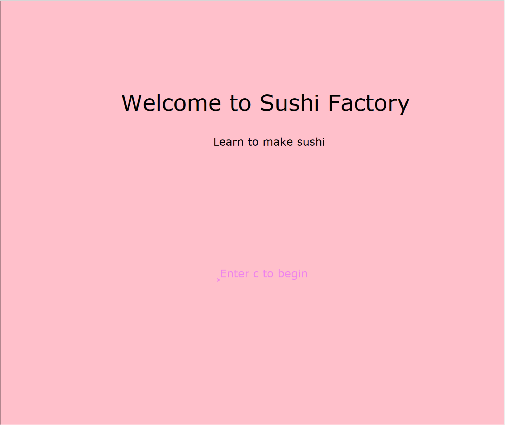
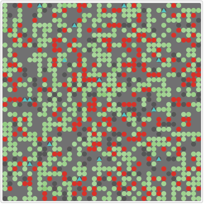
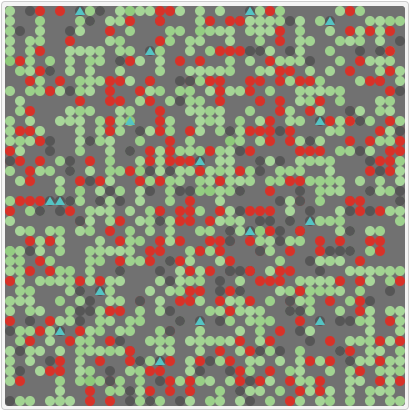

This is my Portfolio Page!
Sushi Factory Game


A tutorial game that instructs the player how to make two sushi rolls, a California Roll and a Salmon Roll. The player gets to assemble, roll, cut, and plate the sushi. They type in key words when prompted to make the program lay out the proper ingredients in the right order. If they don't enter the right key words at the right time, the game ends and they have to restart. If the player is able to complete the instructional course without making any mistakes, the game plates the sushi for the player to "enjoy".
Fruit Slicer Game


A take on the classic Fruit Ninja game where fruit are thrown up in the air and when clicked they are cut and fall. Unlike the origanal, different fruits are worth different amounts depending on size. We used images as turtles for all the fruit and cut versions of the fruit so that they could move and be clicked on to enact actions like the fruit cutting. There is a timer in the game and the goal is to cut as much fruit as possible in that time limit. When the timer is up, the game ends and you can not cut any more fruit.
Trench Run
A remix Scratch plane game inspired by the trench run in Star Wars. The player has the choice of using either the arrow keys or the mouse to control an x-wing fighter and fly it though the obstacle walls as it flys through the trench. Any time the x-wing fighter hits a wall it explodes in a fire ball, making an explosion sound, and the game ends. The game is split up into three levels and then three sub leves inside each level.The game saves progress, so if you die, you can restart at the start of the level and sublevel you were on.
A Phishy Fish Tank


An investigation into a system breach through email phishing and poor security and the decryption and repair of corrupted files to get a fish tank tracking system running properly. We had to discover where the breach origanated, what files were damaged, what the issues in the damaged code were, and fix them. OUr goal was to get the fish tank monitoring system to run properly again and advise the agency on how to upgrade their security to prevent another breach. We were able to get the system to run smoothly and properly and gave feedback to the agency security advice to keep it from happening again.
NetLogo: Rebellion Simulation
 


An investigation into the practicallity and accuracy of a NetLogo simulation. We investigated the Rebellion simulation that simulates a countries population during a revolution. The model is restricted to impartial bystander citizens, actively rebelling citizens, imprisoned citizens, and police forces. We found that with these perameters the rebellions occured in spike and valleys where the revolution would gain a lot of popularity and gain power but would then be quickly supressed by the police, waiting for a period before repeating this cycle. In this simulation, the rebels essentially never won, always being surpressed. What we found interesting was that a majority of the "people" in the simulation didn't pick a side, a majority of the simulated population was neutral.
3.1.6 Rover


This is the PLTW 3.16 Project. In this project, we analyzed data to make graphs and tables to compare to the known regions of the alien planet. Through matching graphs to the corresponding data sensor and then comparing those readings to the characteristics of the regions, we were able to conclude that the rover is located in the tropical islands of the alien planet. The factors that we analyzed were sound, temperature, light, and wind. The tropical islands region has low temperatures that heat up quickly during the daytime and cool off quickly at night, bright, intense light during daytime, low constand howl of wind and waves, and constant winds that vary with regularity. Each of our four graphs illustrated these requirements for this region. This allowed us to conclude that the rover is located in the tropical islands.